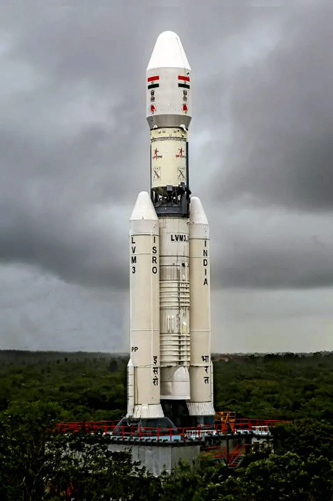
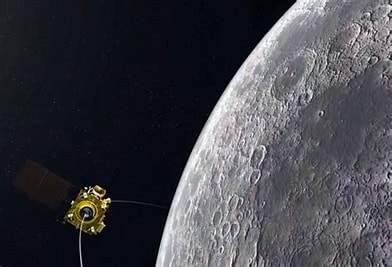

Space exploration, driven by a deep human curiosity about the cosmos, has blossomed into a vast scientific
endeavor. We use powerful telescopes to study distant galaxies and peer back in time, while robotic probes venture
out into our solar system, analyzing the composition of planets, moons, and asteroids. Human spaceflight has taken
us to the Moon, and astronauts continue to conduct groundbreaking research aboard the International Space Station.
This pursuit of knowledge has revolutionized our understanding of the universe, revealing not only the existence
of countless exoplanets but also the potential for water, and maybe even life, beyond Earth. Space exploration
isn't just about scientific discovery though. It fosters international collaboration, pushes the boundaries of
technology, and inspires future generations to reach for the stars. The knowledge and innovations gleaned from
space exploration have countless applications that improve our lives here on Earth, from weather forecasting and
communication satellites to medical treatments and materials science. As we continue to explore the cosmos, we not
only expand the map of the universe but also gain a deeper understanding of our own place within it.As we continue
to explore the cosmos, we not only expand the map of the universe but also gain a deeper understanding of our own
place within it. Who knows what wonders await us on this grand journey of discovery? The future of space
exploration is bright, beckoning us with the promise of pushing the frontiers of human knowledge and achievement.